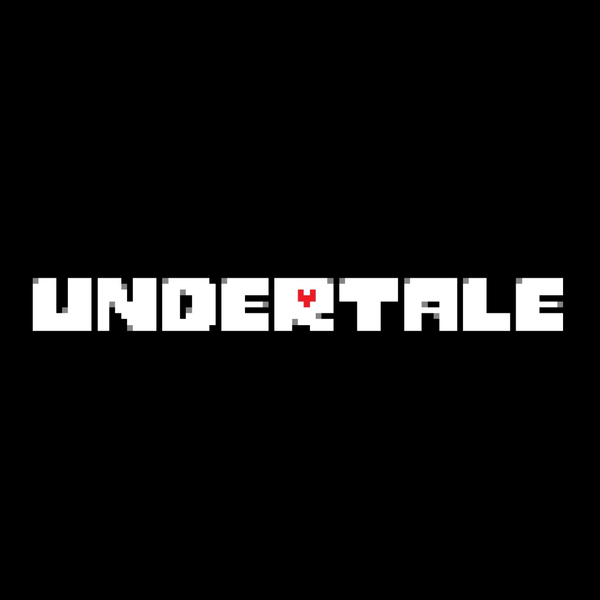

언더테일의 모든 것
언더테일에 대하여
언더테일의 샌즈
델타룬의 샌즈
언더테일에 대하여
사실 이 문서는 별로 중요하지 않다. 
언더테일(Undertale)은 토비 폭스가 제작해 2015년 9월 15일에 출시된 인디 게임이다. 언더테일을 한국어로 굳이 번역하자면 지하 이야기 정도가 된다.
Please enable JavaScript to view the
comments powered by Disqus.
이 글의
저작권
은 일단 당신에게는 없습니다.